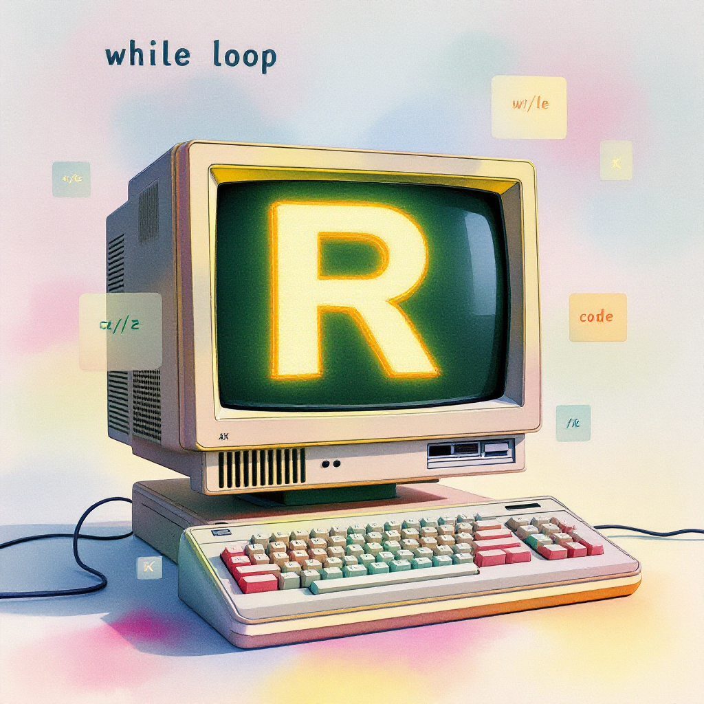

# Initialize a counter
counter <- 1
# Create a while loop that counts from 1 to 5
while (counter <= 5) {
print(paste("Count:", counter))
counter <- counter + 1
}[1] "Count: 1"
[1] "Count: 2"
[1] "Count: 3"
[1] "Count: 4"
[1] "Count: 5"Steven P. Sanderson II, MPH
March 31, 2025
Programming, While loops in R, R programming loops, Control structures in R, R programming concepts, R loop examples, Infinite loops in R, Breaking loops in R, Nested loops in R, R for loop vs while loop, R programming best practices, How to use while loops in R programming, Understanding control structures in R for beginners, Practical examples of while loops in R, Avoiding infinite loops when using while in R, Comparing while loops and for loops in R programming
Welcome to your comprehensive guide to while loops in R! While loops are one of the fundamental control structures in R that allow you to execute a block of code repeatedly based on a condition.
In this guide, we’ll break down while loops into simple concepts with plenty of practical examples that you can follow along with. By the end of this article, you’ll feel confident using while loops in your own R projects!
A while loop in R is a control structure that repeats a block of code as long as a specified condition remains TRUE. It’s like telling R: “Keep doing this task until I tell you to stop.”
The basic syntax of a while loop looks like this:
The loop follows these simple steps:
While loops are particularly useful when:
Let’s start with a simple example to see a while loop in action:
# Initialize a counter
counter <- 1
# Create a while loop that counts from 1 to 5
while (counter <= 5) {
print(paste("Count:", counter))
counter <- counter + 1
}[1] "Count: 1"
[1] "Count: 2"
[1] "Count: 3"
[1] "Count: 4"
[1] "Count: 5"In this example, we:
One of the most common issues with while loops is creating an infinite loop—a loop that never ends because the condition never becomes FALSE.
Here’s an example of an infinite loop:
This loop would run forever because counter starts at 1 and keeps increasing, so it will always be greater than 0.
To avoid infinite loops:
Sometimes you may want to exit a loop early, even if the condition is still TRUE. R provides two commands for this:
break: Exits the loop completelynext: Skips the current iteration and moves to the next oneLet’s calculate the sum of numbers from 1 to a given limit:
# Function to calculate sum of numbers up to a limit
calculate_sum <- function(limit) {
sum <- 0
counter <- 1
while (counter <= limit) {
sum <- sum + counter
counter <- counter + 1
}
return(sum)
}
# Calculate sum from 1 to 10
result <- calculate_sum(10)
print(paste("Sum of numbers from 1 to 10:", result))[1] "Sum of numbers from 1 to 10: 55"Here’s a fun example of a number guessing game using a while loop:
play_guessing_game <- function() {
# Generate a random number between 1 and 100
secret_number <- sample(1:100, 1)
guess <- -1
attempts <- 0
print("I'm thinking of a number between 1 and 100.")
while (guess != secret_number) {
guess <- as.numeric(readline("Enter your guess: "))
attempts <- attempts + 1
if (guess < secret_number) {
print("Too low! Try again.")
} else if (guess > secret_number) {
print("Too high! Try again.")
} else {
print(paste("Congratulations! You guessed the number in", attempts, "attempts."))
}
}
}
# Uncomment to play the game
# play_guessing_game()Let’s try a simple exercise. Write a while loop that prints the first 10 even numbers.
The Fibonacci sequence is a classic example where we can use while loops. Each number is the sum of the two preceding ones, starting from 0 and 1:
# Generate Fibonacci sequence up to a limit
generate_fibonacci <- function(limit) {
fibonacci <- c(0, 1)
while (fibonacci[length(fibonacci) - 1] + fibonacci[length(fibonacci)] <= limit) {
next_number <- fibonacci[length(fibonacci) - 1] + fibonacci[length(fibonacci)]
fibonacci <- c(fibonacci, next_number)
}
return(fibonacci)
}
# Generate Fibonacci numbers up to 100
fib_sequence <- generate_fibonacci(100)
print(fib_sequence) [1] 0 1 1 2 3 5 8 13 21 34 55 89R provides different types of loops, and it’s important to know when to use each:
Here’s the same task using both types:
# Using a while loop
counter <- 1
while (counter <= 5) {
print(paste("While loop:", counter))
counter <- counter + 1
}[1] "While loop: 1"
[1] "While loop: 2"
[1] "While loop: 3"
[1] "While loop: 4"
[1] "While loop: 5"[1] "For loop: 1"
[1] "For loop: 2"
[1] "For loop: 3"
[1] "For loop: 4"
[1] "For loop: 5"You can place one while loop inside another to create nested loops:
While loops are powerful, they’re not always the most efficient choice in R. R is vectorized by design, meaning it performs operations on entire vectors at once, which is typically faster than looping.
Consider this example:
# Using a while loop
numbers <- 1:1000000
sum_result <- 0
i <- 1
while (i <= length(numbers)) {
sum_result <- sum_result + numbers[i]
i <- i + 1
}
# Using vectorization
vec_sum <- sum(numbers)The vectorized approach (sum(numbers)) will be much faster than the while loop.
A practical application of while loops is implementing numerical algorithms. Here’s an example using the Newton-Raphson method to find the square root of a number:
newton_sqrt <- function(n, tolerance = 1e-10) {
# Initial guess
x <- n / 2
# Keep track of iterations
iterations <- 0
while (abs(x^2 - n) > tolerance) {
# Newton-Raphson update formula for square root
x <- 0.5 * (x + n/x)
iterations <- iterations + 1
# Safety measure to prevent infinite loops
if (iterations > 1000) {
print("Maximum iterations reached!")
break
}
}
print(paste("Found solution in", iterations, "iterations"))
return(x)
}
# Find square root of 16
sqrt_16 <- newton_sqrt(16)[1] "Found solution in 5 iterations"[1] "Square root of 16: 4"break to exit a loop early and next to skip to the next iterationWhile loops are a powerful tool in your R programming toolkit. They enable you to automate repetitive tasks and create dynamic algorithms that respond to changing conditions. By mastering while loops, you’ll significantly enhance your ability to write flexible and responsive R code.
Remember that while loops are just one of several loop constructs in R. As you continue your programming journey, explore for loops, repeat loops, and vectorized operations to find the most efficient solution for each specific task.
Now it’s your turn to practice! Try modifying the examples above or create your own while loops to solve different problems. The more you practice, the more natural these concepts will become.
A1: Always ensure that the condition in your while loop will eventually become FALSE. Include code inside the loop that modifies the variables used in the condition. Additionally, consider adding a maximum iteration count as a safety measure.
A2: While loops check the condition at the beginning of each iteration, so they might not execute at all if the condition is initially FALSE. Repeat loops always execute at least once and check the condition inside the loop with a break statement.
A3: Use while loops when you don’t know beforehand how many iterations you’ll need. For loops are better when you know exactly how many times you want to repeat an action.
A4: Yes, you can nest while loops inside other while loops. This is useful for operations that require multiple levels of iteration, like working with matrices or multi-dimensional data.
A5: Yes, R’s vectorized operations usually perform better than loops. Functions like apply(), lapply(), sapply(), and other members of the *apply family can replace loops in many cases with better performance.
Did you find this guide helpful? Share it with your fellow fRiends! If you’ve created interesting while loop examples, post them in the comments below. I’d love to see what you’ve learned and how you’re applying while loops in your own projects.
Happy Coding! 🚀

You can connect with me at any one of the below:
Telegram Channel here: https://t.me/steveondata
LinkedIn Network here: https://www.linkedin.com/in/spsanderson/
Mastadon Social here: https://mstdn.social/@stevensanderson
RStats Network here: https://rstats.me/@spsanderson
GitHub Network here: https://github.com/spsanderson
Bluesky Network here: https://bsky.app/profile/spsanderson.com
My Book: Extending Excel with Python and R here: https://packt.link/oTyZJ
You.com Referral Link: https://you.com/join/EHSLDTL6